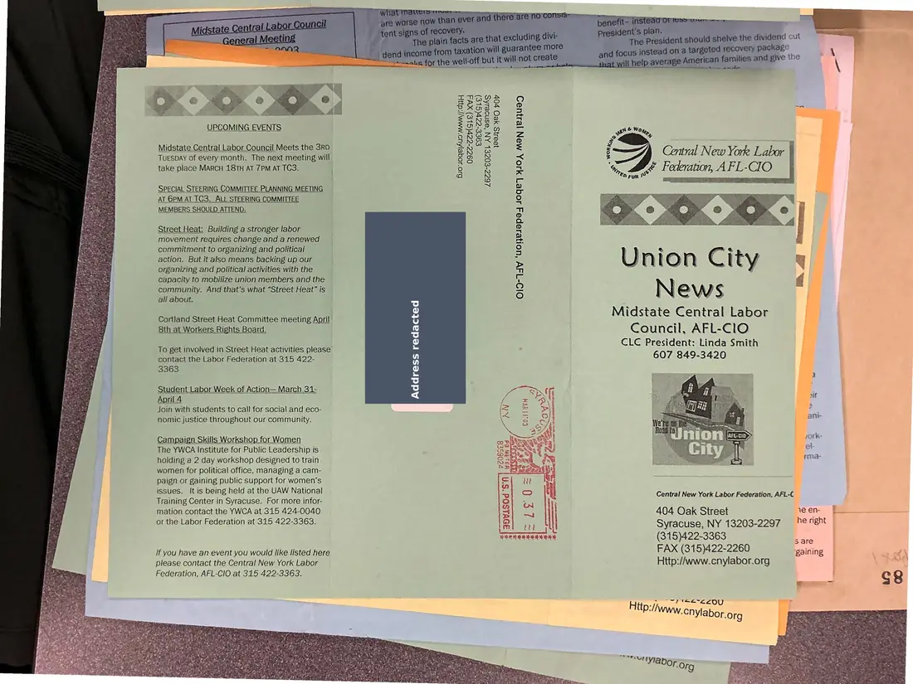
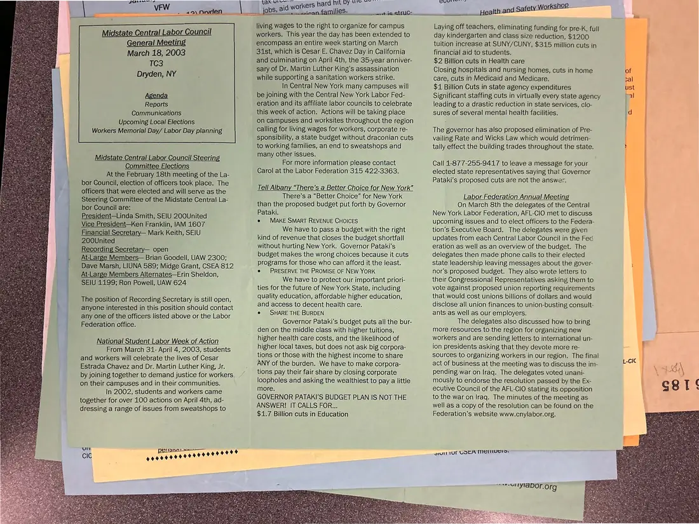

Newsletter, 2 pages
Union City News, Midstate Central Labor Council, March 2003
March 2003
Announces the March 18, 2003 general meeting and reports on a national student labor week of action, New York State budget cuts, and the Steering Committee election results.
Download or cite this itemPages


(open zoom view)A personal home address has been covered on this page.
Read the page text (machine-read, contains errors)
This text was generated automatically from the photograph and has not been corrected. The image is the authoritative record.
oe @2@y 0 <p UPCOMING EVENTS Midstate Central Labor Council Meets the 3RD Tuespay of every month. The next meeting will take place MARCH 18TH AT 7PM AT TC3. | SPECIAL STEERING COMMITTEE PLANNING MEETING AT 6PM AT TC3. ALL STEERING COMMITTEE MEMBERS SHOULD ATTEND. Street Heat: Building a stronger labor movement requires change and a renewed commitment to organizing and political action. But it also means backing up our organizing and political activities with the capacity to mobilize union members and the community. And that’s what “Street Heat” is all about. Cortland Street Heat Committee meeting April 8th at Workers Rights Board. To get involved in Street Heat activities please contact the Labor Federation at 315 422- 3363 Student Labor Week of Action— March 34- April 4 Join with students to call for social and eco- nomic justice throughout our community. Campaign Skills Workshop for Women The YWCA Institute for Public Leadership is holding a 2 day workshop designed to train women for political office, managing a cam- paign or gaining public support for women’s issues. It is being held at the UAW National Training Center in Syracuse. For more infor- mation contact the YWCA at 315 424-0040 or the Labor Federation at 315 422-3363. !f you have an event you would like listed here please contact the Central New York Labor Federation, AFL-CIO at 315 422-3363. xe] xe] hen My) hen xe) xe) Qv1S0d ‘Sin ahs" (ry (22 eile, oe, ae wala) as Fea=sS 9 oc ae SASK) =! Soke > Sei = ano x cs Bas ys OoONWZR Zz 35H2<2 © eee wo 2o = my? (SG Sas < a o N iy ce) mri te) eto es = eS hess Sopan Cs Rb Ombte RB eaee Boa poy aR. af pee aye SE ay | Sas) Fins Br vc LS, Pear ASS ADEE ab ep Hap Union City Midstate Central Labor Council, AFL-ClO CLC President: Linda Smith 607 849-3420 Contral New Yorke Labor | News Central New York Labor Federation, AFL-C 404 Oak Street ree ES Syracuse, NY 13203-2297 he right | (315)422-3363 ae FAX (315)422-2260 gaining Http://www.cnylabor.org \ RG


(open zoom view)Read the page text (machine-read, mostly readable)
This text was generated automatically from the photograph and has not been corrected. The image is the authoritative record.
SSS ao,.Nnnden __ Midstate Central Labor Council General Meeting March 18, 2003 TC3 Dryden, NY Agenda Reports Communications Upcoming Local Elections Workers Memorial Day/ Labor Day planning Midstate Central Labor Council Steering Committee Elections At the February 18th meeting of the La- bor Council, election of officers took place. The officers that were elected and will serve as the Steering Committee of the Midstate Central La- bor Council are: President—Linda Smith, SEIU 200United Vice President—Ken Franklin, IAM 1607 Financial Secretary— Mark Keith, SEIU 200United Recording Secretary— open At-Large Members— Brian Goodell, UAW 2300; Dave Marsh, LIUNA 589; Midge Grant, CSEA 812 At-Large Members Alternates—Erin Sheldon, SEIU 1199; Ron Powell, UAW 624 The position of Recording Secretary is still open, anyone interested in this position should contact any one of the officers listed above or the Labor Federation office. National Student Labor Week of Action From March 31- April 4, 2003, students and workers will celebrate the lives of Cesar Estrada Chavez and Dr. Martin Luther King, Jr. by joining together to demand justice for workers on their campuses and in their communities. In 2002, students and workers came together for over 100 actions on April 4th, ad- dressing a range of issues from sweatshops to UT [i> ve WYYYTILI TL ane jobs, ald workers hard hit by“ living Wages to the right to organize for campus workers. This year the day has been extended to encompass an entire week starting on March 31st, which is Cesar E. Chavez Day in California and culminating on April 4th, the 35-year anniver- sary of Dr. Martin Luther King’s assassination while supporting a sanitation workers strike. In Central New York many campuses will be joining with the Central New York Labor Fed- eration and its affiliate labor councils to celebrate this week of action. Actions will be taking place On campuses and worksites throughout the region calling for living wages for workers, corporate re- sponsibility, a state budget without draconian cuts to working families, an end to sweatshops and many other issues. For more information please contact Carol at the Labor Federation 315 422-3363. Tell Albany “There’s a Better Choice for New York” There’s a “Better Choice” for New York than the proposed budget put forth by Governor Pataki. e MAKE SMART REVENUE CHOICES We have to pass a budget with the right kind of revenue that closes the budget shortfall without hurting New York. Governor Pataki’s budget makes the wrong choices because it cuts programs for those who can afford it the least. e PRESERVE THE PROMISE OF NEW YORK We have to protect our important priori- ties for the future of New York State, including quality education, affordable higher education, and access to decent health care. e SHARE THE BURDEN Governor Pataki’s budget puts all the bur- den on the middle class with higher tuitions, higher health care costs, and the likelihood of higher local taxes, but does not ask big corpora- tions or those with the highest income to share ANY of the burden. We have to make corpora- tions pay their fair share by closing corporate loopholes and asking the wealthiest to pay a little more. GOVERNOR PATAKI’S BUDGET PLAN IS NOT THE ANSWER! IT CALLS FOR... $1.7 Billion cuts in Education SRST ote No) re 7), Laying off teachers, eliminating funding for pre-K, full day kindergarten and class size reduction, $1200 tuition increase at SUNY/CUNY, $315 million cuts in financial aid to students. $2 Billion cuts in Health care Closing hospitals and nursing homes, cuts in home care, cuts in Medicaid and Medicare. $1 Billion Cuts in state agency expenditures Significant staffing cuts in virtually every state agency leading to a drastic reduction in state services, clo- sures of several mental health facilities. The governor has also proposed elimination of Pre- vailing Rate and Wicks Law which would detrimen- tally effect the building trades throughout the state. Call 1-877-255-9417 to leave a message for your elected state representatives saying that Governor Pataki’s proposed cuts are not the answer. Labor Federation Annual Meeting On March 8th the delegates of the Central New York Labor Federation, AFL-CIO met to discuss upcoming issues and to elect officers to the Federa- tion’s Executive Board. The delegates were given updates from each Central Labor Couneil in the Fed eration as well as an overview of the budget. The delegates then made phone calls to their elected state leadership leaving messages about the gover- nor’s proposed budget. They also wrote letters to their Congressional Representatives asking them to vote against proposed union reporting requirements that would cost unions billions of dollars and would disclose all union finances to union-busting consult- ants as well as our employers. The delegates also discussed how to bring more resources to the region for organizing new workers and are sending letters to international un- ion presidents asking that they devote more re- sources to organizing workers in our region. The final act of business at the meeting was to discuss the im- pending war on Iraq. The delegates voted unani- mously to endorse the resolution passed by the Ex- ecutive Council of the AFL-CIO stating its opposition to the war on Iraq. The minutes of the meeting as well as a copy of the resolution can be found on the Federation’s website www.cnylabor.org. sii) 1Of LOLA Memvers. eeeerlylaDor.Org
See something wrong, or recognize a person or event? Send a correction. If you hold rights in this item or think it should not be public, write to the same address.